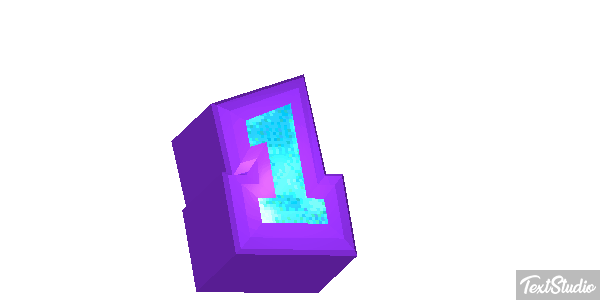

O número um é o átomo do sistema numérico e a semente de toda a matemática, sendo a identidade multiplicativa essencial — o elemento que, ao multiplicar qualquer número, o mantém intacto —, além de ser o único número inteiro positivo que não é nem primo, nem composto.
<-Voltar Avançar->